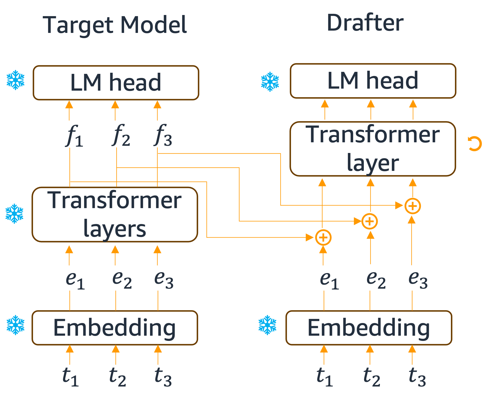

2.5 Speculative Decoding #
By default, LLM decoding generates one token at a time. It loads kv cache of all previous tokens but only computes for a single new token. Such a process is known to be memory-bound and under-utilizes the hardware.
Speculative Decoding (SD) is one approach that improves the throughput of token generation. In SD, the LLM (dubbed target model) is paired with a lightweight drafter, which could be another much smaller LLM. The drafter predicts multiple tokens into the future (illustrated left below). And the target model verifies these tokens in parallel (illustration right below).


Notably, the verfication inputs the prompt and drafter’s generation together to the target model. The prompt’s kv cache is loaded, and attention is computed for multiple drafted tokens all at once. This is similar to prefilling and better utilizes compute. The first token that differs (in this case, the “can”) is where rejection starts. The best case is when all drafted tokens are accepted. The worst case is when the first drafted token fails to match. But in such a case, we just fall back to the first token generated by the target model. Therefore, in any case, the generation is exactly the same as a conventional decoding using the target model only. In other words, speculative decoding is lossless.
Clearly, the speedup hinges upon two key factors: 1) How many drafted tokens are accepted; 2) how much faster the drafter is compared against the target model. A good drafter should be fast and generates similar continuation as the target model.
2.5.1 Eagle Drafter #
One could train a drafter such that its generations match the target models’ (e.g., DistillSpec). However, training such a separate drafter from scratch could be significant one-time overhead. Instead, one could reuse intermediate hidden states and parameters of the target model. Eagle is one such method that achieves State-of-the-art performance.
The eagle drafter is illustrated below, target model on the left, and the drafter on the right. The drafter reuses the embedding layer and LM head of the target model. Moreover, it combines the input tokens’ embeddings (the $e_i$’s) and their features (the $f_i$’s) and further processes them with a transformer decoder layer, which is the only trainable parameter in the drafter.

The drafter is trained such that its generated continuation can match those by the target model. An easy way is to generate continuations with the target model and use that as training data. Then train the drafter by minimizing next-token-prediction loss on this dataset. A more sophisticated approach by the seminal Eagle paper proposes a distillation based loss that minimizes the KL divergene between the logits of drafter and target model.
2.5.2 Tree-structured Draft #
As an orthogonal approach to improve acceptance, one could draft multiple continuations. This also fully utilizes the compute power of hardware. These continuations can be viewed as a tree since they often share some part of their prefixes. This token tree is verified using tree attention in parallel.
2.5.3. Speculative Decoding on Trainium #
The eagle drafter has already been integrated in NeuronX Distributed Inference (NXDI) toolkit for Trainium. An example is in this tutorial, showing 35% higher throughput than conventional causal decoding.